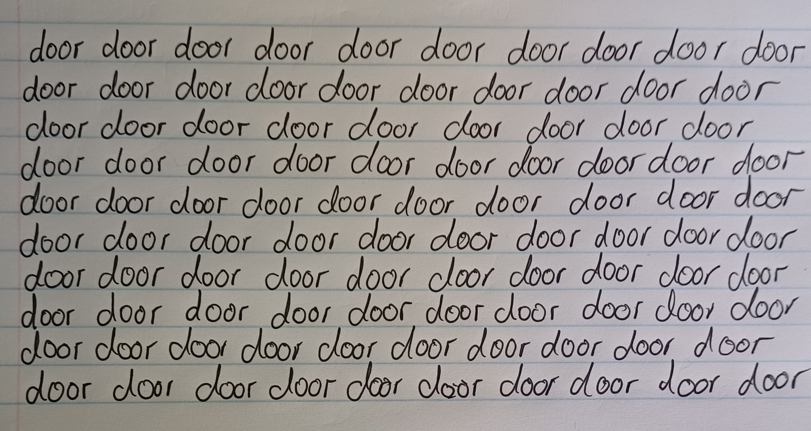

On déjà vu, jamais vu, and the curious ways familiarity shapes what we think we know.
Door.
Look at the word for a moment. You know what it means without having to think about it. Now write it down, then keep writing the same word for at least a minute.

Somewhere past the twentieth or thirtieth repetition, something odd may happen. The letters start to look wrong. The two o's seem excessive, almost invented, and the word begins to loosen from the object it names. You still know perfectly well what a door is, and that door is the word for one. Yet for a few seconds it can begin to resemble gobbledygook, or a message written in a language you don't recognise.
This is a documented effect rather than a private glitch. In research published in 2021, psychologist Chris Moulin and colleagues at the universities of Grenoble and St Andrews asked volunteers to copy familiar words repeatedly until they experienced something peculiar, or simply no longer wanted to continue. One of the words was door. About two-thirds of participants reported a strange sensation on at least one trial, most often after around thirty repetitions, roughly a minute of writing the same word.
The researchers described the experience as jamais vu, French for “never seen”. It is often described as a counterpart to déjà vu: “already seen”. The names themselves are curious because neither phenomenon is really confined to seeing. With déjà vu, something new, or something we cannot remember encountering before, is accompanied by a powerful sense of familiarity. Jamais vu moves in the other direction: something we know feels temporarily strange.
In jamais vu, the peculiar thing is that the knowledge can remain intact while the ordinary feeling of familiarity falters.
A feeling of familiarity is not necessarily mistaken. You may recognise someone in a crowd without having any idea where you know them from, only to remember later that you worked together years ago. At other times the feeling is harder to account for. Déjà vu can produce an intense sense that a present moment has happened before even when no memory can be found to explain it.
Science can investigate when déjà vu occurs, what happens in memory and recognition, and which neurological processes accompany it. Human beings have nevertheless attached many other explanations to the experience, including reincarnation, precognition and unconventional ideas about memory. Déjà vu does not, by itself, provide evidence for any of them. Even so, I am reluctant to treat the limits of scientific explanation as the point at which curiosity must stop. Describing a mechanism does not necessarily settle every philosophical question the experience prompts.
Jamais vu creates the inverse problem. You know, and yet for a moment it does not quite feel as though you know.
The stranger in the mirror
A different experiment involves something considerably more intimate than a word: your own face.
In 2010, psychologist Giovanni Caputo reported what he called the strange-face-in-the-mirror illusion. Participants sat in a dimly lit room and gazed at their own reflected faces. Within about a minute, many began seeing distortions. After prolonged gazing, some reported an unfamiliar face, the altered face of somebody they knew, an animal, or other startling transformations.
This is not jamais vu, and the perceptual mechanisms being studied are different. What interests me is the object undergoing the transformation.
Your own face should surely rank among the most familiar things you possess, yet even that familiarity is less stable than it seems. Most of the time we glance at a mirror for practical reasons and move on. Remain there, looking directly into your own eyes, and something peculiar can happen even without the dramatic transformations reported in Caputo's experiment. Instead of simply recognising yourself, you can become acutely aware that you are looking at a face at all: one that is intimately yours and yet, for a moment, oddly separate from the person doing the looking.
There is another vocabulary close to experiences of this kind: dissociation. The word needs care. Jamais vu and the strange-face illusion are not the same thing as depersonalisation or derealisation, and an ordinary transient experience should not be confused with a dissociative disorder. Déjà vu has sometimes been described as a dissociative phenomenon, although research on ordinary déjà vu does not support treating it as a core pathological dissociative experience. Depersonalisation and derealisation offer a more striking subjective parallel: a person may know who and where they are while their ordinary sense of themselves, or of the reality and familiarity of the world around them, has altered.
The overlap is not necessarily one of cause. It is an overlap in the strange discrepancy it exposes. I know this is my face. I know this is my hand. I know this is my room. Why does knowing suddenly not feel sufficient?
That question belongs partly to psychology and partly somewhere older and less easily contained. We are both the person experiencing the world and something within that world that can be looked at. A mirror makes the arrangement unusually difficult to ignore.
Familiarity
We talk about familiarity as though it were one of the qualities an object possesses. A familiar face. A familiar house. A familiar song.
Objects and places can, of course, contain details that genuinely help us recognise them. A childhood home may still have the uneven step everyone learnt to avoid, a cupboard door that never quite closed, the particular sound of a gate, or a pattern in the grain of a wooden floor that, once your childhood imagination had made something of it, you could never quite see as random again. Those details belong to the place and may identify it immediately. The feeling accompanying recognition depends on more than the object itself.
A recording of a song can remain unchanged for decades while its associations accumulate. A song linked to someone we loved may continue to carry the warmth of that memory even after death, separation, or time has added grief, regret, or distance to it. The music remains the same; what it evokes can become more complicated.
Previous encounters matter, but so do memory, association and whatever has happened since. Recognition can also behave in ways that expose processes we normally experience as one seamless act. Studies of people with Capgras delusion have shown that someone may consciously recognise a familiar face while failing to show the usual autonomic response associated with seeing someone known to them. The person may know exactly who they are looking at while something about the expected feeling of familiarity is disturbed.
Familiarity, recognition and memory overlap so thoroughly in everyday life that we rarely have reason to distinguish among them. A familiar face may remain familiar while the name refuses to arrive. A feeling of recognition may appear first and turn out to have been accurate. Déjà vu can produce familiarity without a retrievable memory to explain it. Jamais vu can leave the knowledge in place while familiarity temporarily deserts it.
Things we experience as a single act of knowing may, on closer inspection, be several things arriving together.
The Penumbra of Knowing
There are things you almost certainly believe but cannot remember how you came to believe them. There are things we know without remembering when we first came to know them. Trying to give examples is strangely difficult, because the moment I choose one, somebody else may be able to locate it precisely in their own history. Perhaps I could too, if I thought about it for long enough.
Then there are assumptions whose histories are harder to reconstruct. Ideas about other people, about events in the past, about what is normal or threatening, respectable or shameful, may have reached us through family, school, culture, politics, religion, media, experience, or some mixture we could no longer untangle if we tried. Some survive close examination. Others do not.
This is where the problem of familiarity begins to shade into an epistemological one. Knowing something, believing something, remembering where we learnt it and experiencing the conviction that it is true are not interchangeable states, however readily they may travel together.
Repetition complicates matters further because a claim heard often enough may eventually acquire the feeling of something long known.
Of course is an interesting phrase. It can mean that the evidence is overwhelming. It can also mark the point at which we have stopped asking where the belief came from.
Psychologists have studied one mechanism that may contribute to this. The illusory truth effect describes the tendency for repeated statements to be judged as more truthful than unfamiliar ones. The effect has limits. Prior knowledge, plausibility and context matter, and people do not simply believe everything they hear repeatedly. Even so, repetition can influence judgements of truth.
One explanation involves processing fluency. Information encountered before is often easier for the mind to process, and that ease can contribute to a sense that the information is credible.
There is something wonderfully awkward about placing this beside the experiment with door. Repetition can make one familiar thing temporarily strange while helping another acquire the ease of familiarity. The effects are different and should not be collapsed into one mechanism, but together they make it harder to assume that familiarity is reliable evidence of knowledge.
Knowing someone else
The uncertainty becomes more consequential when what we think we know is not a word or a proposition but another person.
Human beings are remarkably comfortable with categories. Nationalities, religions, generations, professions, political groups and innumerable other classifications allow us to say things about people we have never met. Sometimes those generalisations contain useful information. Sometimes they become substitutes for information.
An individual life has a habit of making the category less tidy.
Someone who had existed only as one of those people acquires a face, a childhood, peculiar habits, somebody they love, an opinion that does not match the one their category was supposed to provide. The generalisation may survive, but now it has something troublesome inside it.
And the problem of knowing another life does not stop conveniently at our own species.
Elephants have been observed showing sustained interest in the bodies and bones of dead members of their species. In 2018, an orca known as Tahlequah carried her dead calf for at least seventeen days and roughly a thousand miles.
Scientists are appropriately cautious when describing the internal emotional lives of other animals. Behaviour can be observed; subjective experience cannot be directly inspected. Anthropomorphism is a legitimate concern because human beings are very capable of seeing ourselves where the evidence does not justify it.
I understand that caution. I am less certain that anthropomorphism is the only mistake available to us.
Science cannot tell us what Tahlequah experienced internally. Calling her behaviour grief is therefore an interpretation, and some researchers would resist the word for precisely that reason. I find it the most convincing interpretation, even while accepting that I cannot know what the experience felt like from inside an orca's mind.
The animal does not have to grieve exactly as I do before the possibility of grief deserves to be taken seriously.
This may be one of the more difficult boundaries of knowing. Another human being can tell me what something feels like and I can still misunderstand them. Another species cannot translate its experience into mine at all. Certainty becomes harder, but uncertainty cuts in both directions. Not knowing exactly what another creature experiences is not evidence that it experiences nothing.
When the writing became unfamiliar
An unexpectedly appropriate problem arose while I was working on this essay.
At points I had leaned on AI as an aid in research and editing. Somewhere during that process, the writing became extraordinarily polished. Arguments seemed to move effortlessly from one idea to the next, metaphors appeared in exactly the right places, and paragraphs ended with satisfying conclusions. The whole piece seemed coherent enough that, at first, I hardly noticed where some of that coherence was only apparent.
When I began looking at individual sentences, a metaphor could sound profound until I tried to explain what it actually meant. Ideas sat beside one another because they produced a satisfying rhythm rather than because they belonged to a defensible category. A conclusion could arrive elegantly from a premise that had never properly been established. Some of the writing was beautiful, and some of it was beautifully wrong.
There was an irony in discovering this while writing about familiarity. I had become familiar with the essay as a finished object, and its fluency had helped persuade me that I understood what it was saying.
I then asked AI to make the prose sound more human, which made the experiment more disorienting still. The result often sounded less like me. Some passages became painfully plain. In others, the language remained plausible while the reasoning became weaker, as though the surface had survived after parts of the structure underneath it had been removed.
Eventually I stopped asking how human the prose sounded and began reading slowly enough to ask a more useful question: did I actually believe what each sentence was saying? I checked whether metaphors made sense, whether examples supported the argument, whether supposedly related ideas really belonged together, and whether I would stand behind a sentence if somebody asked me to explain it.
There is an unsettling resonance in the word hallucination, which is also used for certain failures of generative AI. The term is metaphorical: a human hallucination is a sensory experience, while a language model has no subjective experience to hallucinate. Yet the borrowed word catches at a resemblance. Generative AI can produce false or unsupported information with extraordinary fluency, giving coherence to material that does not correspond to reality.
This is hardly a vulnerability unique to machines. People are drawn to patterns, categories, symmetry and explanations. We use analogy and metaphor, and we like arguments that resolve. We are capable of forcing unruly reality into shapes that are easier to understand, and sometimes easier to tolerate. Large language models did not invent those habits. They learnt them from us.
Research into whether readers can tell human and AI writing apart makes the boundary harder to locate. In a 2026 study published in Judgment and Decision Making, participants trying to distinguish human-written stories from AI-generated ones performed at or below chance. Other research suggests that people may rate creative work differently once they believe AI produced or assisted it, even when the words themselves have not changed. Our judgement of a piece can shift when its presumed origin changes.
Once I became familiar with the rhetorical habits I associated with AI, I began finding them everywhere, including in unquestionably human writing and in my own habits from long before I ever used a language model. I love metaphor and rhythm, and I like returning to an image at the end of an essay. Those things do not belong to machines. What the experience had made me more conscious of was the need to examine the thought beneath the language: whether an argument still held when stripped of its fluency, whether a metaphor clarified an idea rather than merely decorating it, and whether connections I found satisfying were actually defensible.
That seems more useful to me than trying to decide whether a sentence merely looks human.
Looking again
The world contains far more information than any mind could examine individually. We survive partly because memory and cognition do not require us to reconstruct everything from first principles whenever we encounter it. We recognise. We remember. We categorise. We develop expectations and allow much of what is known to remain known without continuously asking ourselves how we know it. Usually that is extraordinarily useful; a door can remain a door.
But the experiences gathered here expose small separations inside processes that ordinarily feel whole. A word remains known while becoming strange. A moment feels remembered without yielding a memory. A face can be recognised without producing its expected familiarity. A repeated statement can acquire credibility partly because it has become easier to process. Another mind can give us behaviour to interpret without giving us direct access to the experience behind it. Fluent language can produce a feeling of understanding that survives only until somebody asks what, exactly, the sentence means.
These are not versions of one psychological mechanism, and I don't think they need to be. Their resemblance lies somewhere else: each exposes a little distance between what we know, what we recognise, what we believe, and the feeling that normally tells us those things belong together.
Door
Look at the word once more.
Door.
It probably looks ordinary again.
A door is one of the simplest pieces of architecture imaginable, yet human cultures have repeatedly given thresholds meanings far beyond their practical function. The Romans had Janus, the two-faced god associated with gates, beginnings and transitions. Across cultures, doorways have been surrounded by rituals involving entry and departure. In The Book of Symbols, the gate appears repeatedly as a boundary between states: inside and outside, known and unknown, one condition of being and whatever comes after it.
Stand on one side of a door and you are here. Cross it and you are somewhere else. The boundary itself can be surprisingly insubstantial: a door does not always have hinges, or even close. Sometimes it is simply an opening left in a wall.
The experiment at the beginning of this essay makes a much smaller crossing. Nothing happens to the object and very little happens to the word. Four familiar letters are repeated until, briefly, the ordinary relationship between them and what you know becomes strange enough to notice.
I began with door and found myself thinking about faces, memory, belief, other minds and eventually the language I was using to write about all of them. They are not the same problem. What interested me was that each contained some small uncertainty in a place I had assumed certainty lived. Maybe that is why I keep returning to the door.
Not because the familiar is secretly false, or because everything we know ought to be distrusted. Most of the time a door should be allowed to remain exactly what it is. But occasionally something interrupts the ease with which we recognise the world, and the interruption gives us an unusual opportunity: not to stop knowing, but to notice what knowing had felt like before the feeling disappeared.
Door.
Look at it for long enough and the word may become strange.
The door itself remains exactly where it was.
Sources and further reading
Research on repeated word-writing and the experimentally induced experience of jamais vu.
Moulin et al. The the the the induction of jamais vu in the laboratory: word alienation and semantic satiation.Read the study →Research on perceptual distortions reported during prolonged mirror-gazing under low illumination.
Caputo, G. B. Strange-face-in-the-mirror illusion.Read the study →Research on déjà vu, dissociation, depersonalisation and derealisation, including evidence that ordinary déjà vu should not be treated as a core pathological dissociative experience.
Adachi et al. Déjà vu experiences are rarely associated with pathological dissociation.Read the study →A systematic review distinguishing ordinary, interictal and ictal déjà vu, including findings on co-occurring derealisation, depersonalisation and dissociation.
Non-ictal, interictal and ictal déjà vu: a systematic review and meta-analysis.Read the review →Research on reduced autonomic responses to familiar faces in Capgras delusion and the possible separation of conscious recognition from the expected autonomic response.
Ellis et al. Reduced autonomic responses to faces in Capgras delusion.Read the study →Research examining repetition, processing fluency and perceived truthfulness.
Hassan and Barber. The effects of repetition frequency on the illusory truth effect.Read the study →Research on elephants' responses to elephant remains.
McComb, Baker and Moss. African elephants show high levels of interest in the skulls and ivory of their own species.Read the study →A comparative review of whale and dolphin responses to dead conspecifics, including the difficulty of distinguishing grief from other possible explanations of prolonged post-mortem attentive behaviour.
Bearzi et al. Whale and dolphin behavioural responses to dead conspecifics.Read the review →Documentation of Tahlequah, or J35, carrying her dead calf for at least seventeen days and 1,000 miles in 2018.
Center for Whale Research. J35 update, 11 August 2018.Read the account →Research examining readers' ability to distinguish human-written and AI-generated fiction.
Bot or not? Can people tell the difference between stories written by a human or by an AI system? Judgment and Decision Making, 2026.Read the study →Research examining how beliefs about AI authorship or assistance affect evaluations of creative writing.
Raj, Berg and Seamans. The artificial intelligence disclosure penalty: Humans persistently devalue AI-generated creative writing.Read the study →Background on Janus and the Roman association of doorways, gates, entrances and beginnings.
Janus, Encyclopaedic and classical-reference background.Read the reference →Cultural, mythological and symbolic traditions surrounding gates, doors and thresholds.
ARAS. The Book of Symbols: Reflections on Archetypal Images. Taschen.About the book →